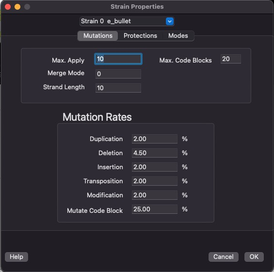

VOLVE 5.0
VOLVE 5.0
Mutation Settings Dialog
This dialog lets you change the mutation rates. The defaults should be fine though. But knock yourself out.
You can control the probability that a mutation will occur by going to the simulation options dialog. The mutation algorithm first decides if it will act at the instructon-level, or code block-level.
| Mutation Type | Instruction-level | Code Block-level |
| Duplication | Pick a random strand of instructions and repeat it at the same spot | Pick a random code block and add a copy to end of program |
| Deletion | Pick a random strand of instructions and remove it | Pick a random code block and remove it. |
| Insertion | Pick a random strand of instructions and insert it into a random spot. | insert a new code block and fill with random instructions. |
| Transposition | Swap 2 random instruction strands | Swap 2 random code blocks |
| Modification | Pick a random strand of instruction and modify it. | Pick a random code block and modify every single instruction or number |
The setting Mutate Code Block controls the probability of performing a code block-level mutation versus an instruction-level mutation. The default is 25%, which means 1 out of 4 mutations will be code block-level mutations.
The setting Max. Code Blocks limits the size of mutated programs to never exceed this maximum number of code blocks. The default is 100.
The setting Max. Apply controls the number of time the mutation algorithm is applied before a new organism is born. The default is 10. This means that a random number from 1 to 10 is chosen before mutating a KFORTH program. The mutation algorithm is then applied this many times. To disable mutations you can set this to 0. This setting can be any number from 0 to 20.
Merge Mode: Select between different ways of merging programs when MAKE-SPORE fertilizes a spore from different parents.
- 0 - interlace code blocks between parents randomly.
- 1 - alternate code blocks between parents, starting with parent 1.
- 2 - alternate code blocks between parents, starting with parent 2.
Strand Length: Defines the average strand length used during mutations. When a short sequence of instructions are to be mutated, this parameter is used to define the size. A random value between 1... Strand Length is chosen. The default is 4, but can be 1 to 20.
See the section, Mutations/Replication for more information on how these probabilities control the mutation algorithm.